Tax feature support for transfer orders
[!include[banner](../../includes/banner.md)]This topic provides information about tax calculation and posting integration in transfer orders. This functionality lets you set up tax calculation and posting in transfer orders for stock transfers. Under European Union (EU) value-added tax (VAT) regulations, stock transfers are considered intra-community supply and intra-community acquisitions.
To configure and use this functionality, you must complete three main steps:
- RCS setup: In Regulatory Configuration Service, set up the tax feature, tax codes, and tax codes applicability for tax code determination in transfer orders.
- Finance setup: In Microsoft Dynamics 365 Finance, turn on the Tax in transfer order feature, set up the tax service parameters for inventory, and set up core tax parameters.
- Inventory setup: Set up the inventory configuration for transfer order transactions.
Set up RCS for tax and transfer order transactions
Follow these steps to set up the tax that is involved in a transfer order. In the example that is shown here, the transfer order is from the Netherlands to Belgium.
On the Tax features page, on the Versions tab, select the draft feature version, and then select Edit.
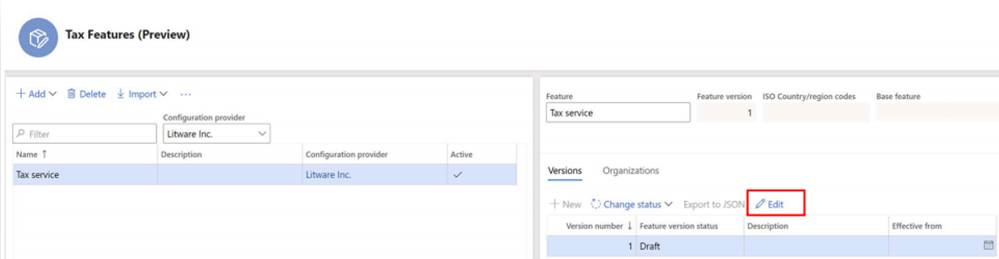
On the Tax features setup page, on the Tax codes tab, select Add to create new tax codes. For this example, three tax codes are created: NL-Exempt, BE-RC-21, and BE-RC+21.
When a transfer order is shipped from a warehouse in the Netherlands, the Netherlands VAT exempted tax code (NL-Exempt) is applied.
Create the tax code NL-Exempt.
- Select Add, enter NL-Exempt in the Tax code field.
- Select By Net Amount in the Tax component field.
- Select Save.
- Select Add in the Rate table.
- Swtich Is Exempt to Yes in the General section.
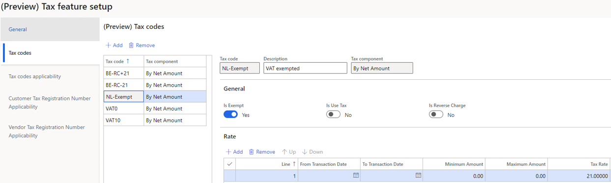
When a transfer order is received at a Belgium warehouse, the reverse charge mechanism is applied by using the BE-RC-21 and BE-RC+21 tax codes.
Create the tax code BE-RC-21.
- Select Add, enter BE-RC-21 in the Tax code field.
- Select By Net Amount in the Tax component field.
- Select Save.
- Select Add in the Rate table.
- Enter -21 in the Tax Rate field.
- Swtich Is Reverse Charge to Yes in the General section.
- Select Save.
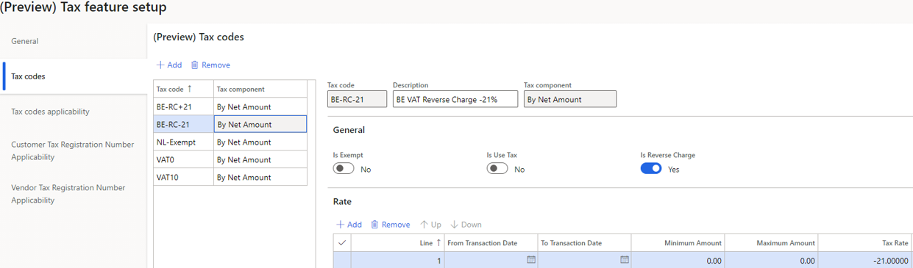
Create the tax code BE-RC+21.
- Select Add, enter BE-RC-21 in the Tax code field.
- Select By Net Amount in the Tax component field.
- Select Save.
- Select Add in the Rate table.
- Enter 21 in the Tax Rate field.
- Select Save.
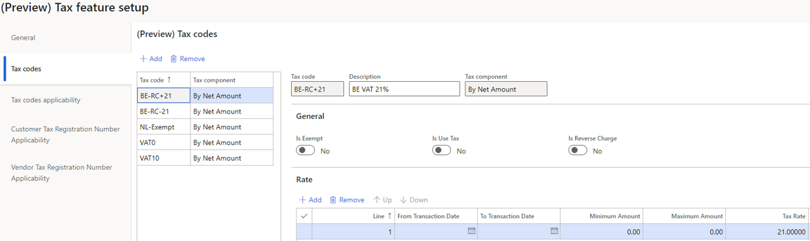
Define the applicability of the tax codes.
Select Manage columns, and then select columns that should be used to build the applicability table.
Note
Be sure to add the Business process and Tax directions columns to the table. Both columns are essential to the functionality for tax in transfer orders.
Add applicability rules. Don't leave the Tax codes, Tax group, and Item tax group fields blank.
Add a new rule for transfer order shipment.
- Select Add in the Applicability rules table.
- In the Business process field, select Inventory to make the rule applicable for a transfer order.
- In the Ship From Country/Region field, enter NLD.
- In the Ship To Country/Region field, enter BEL.
- In the Tax direction field, select Output to make the rule applicable to transfer order shipment.
- In the Tax codes field, select NL-Exempt.
- In the Tax Group field and the Item Tax Group, enter the related sales tax group and item sales tax group which are defined in your Finance system.
Add another rule for transfer order receipt.
- Select Add in the Applicability rules table.
- In the Business process field, select Inventory to make the rule applicable for a transfer order.
- In the Ship From Country/Region field, enter NLD.
- In the Ship To Country/Region field, enter BEL.
- In the Tax direction field, select Input to make the rule applicable to transfer order receipt.
- In the Tax codes field, select BE-RC+21 and BE-RC-21.
- In the Tax Group field and the Item Tax Group, enter the related sales tax group and item sales tax group which are defined in your Finance system.
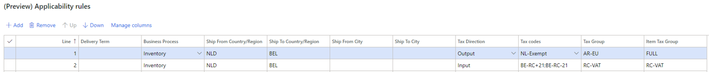
Complete and publish the new tax feature version.
{kind=link}
Set up Finance for transfer order transactions
Follow these steps to enable and set up taxes for transfer orders.
In Finance, go to Workspaces > Feature management.
In the list, find and select the Tax in transfer order feature, and then select Enable now to turn it on.
Important
The Tax in transfer order feature is fully dependent on the tax service. Therefore, it can be turned on only after you've installed the tax service.
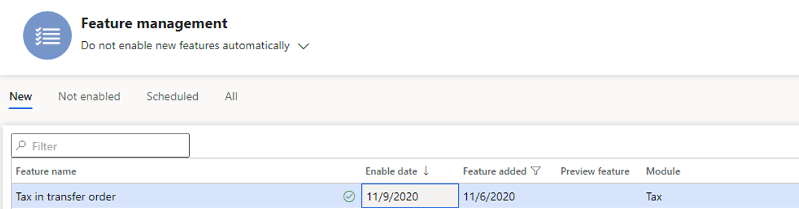
Enable the tax service, and select the Inventory business process.
Important
You must complete this step for each legal entity in Finance where you want the tax service and the functionality for tax in transfer orders to be available.
- Go to Tax > Setup > Tax configuration > Tax service setup.
- In the Business process field, select Inventory.
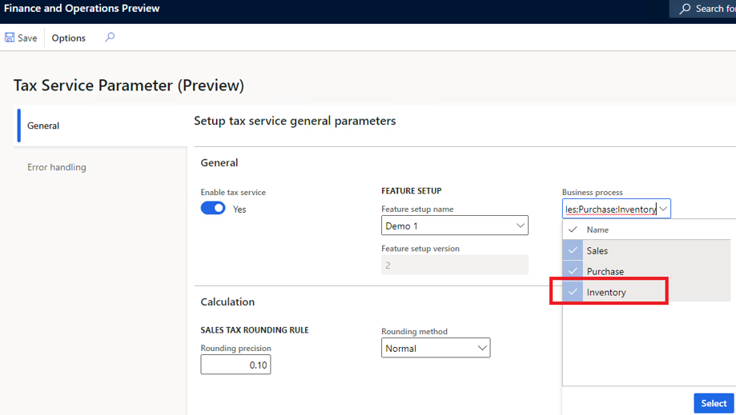
Verify that the reverse charge mechanism is set up. Go to General ledger > Setup > Parameters, and then, on the Reverse charge tab, verify that the Enable reverse charge option is set to Yes.
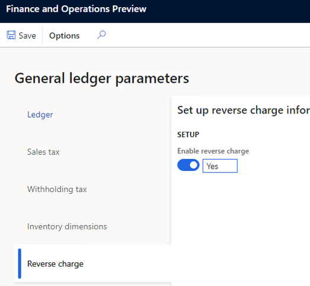
Verify that the related tax codes, tax groups, item tax groups, and VAT registration numbers have been set up in Finance according to the tax service guidance.
Set up an interim transit account. This step is required only when the tax that is applied to a transfer order isn't applicable to a tax exempted or reverse charge mechanism.
- Go to Tax > Setup > Sales tax > Ledger posting groups.
- In the Interim transit field, select a ledger account.
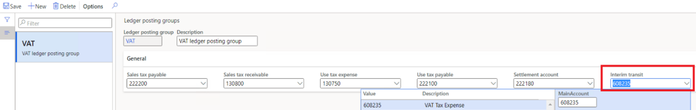
Set up basic inventory for transfer order transactions
Follow these steps to set up basic inventory to enable transfer order transactions.
Create ship-from and ship-to sites for your warehouses in different countries or regions, and add the primary address for each site.
- Go to Warehouse management > Setup > Warehouse > Sites.
- Select New to create the site that you will assign to a warehouse later.
- Repeat step 2 for all the other sites that you must create.
Note
One of the sites that you create should be named Transit. In later steps of this procedure, you will assign this site to the transit warehouse, so that tax-related inventory vouchers can be posted in "ship" and "receive" transactions for transfer orders. The address of the transit site is irrelevant to tax calculation. Therefore, you can leave it blank.
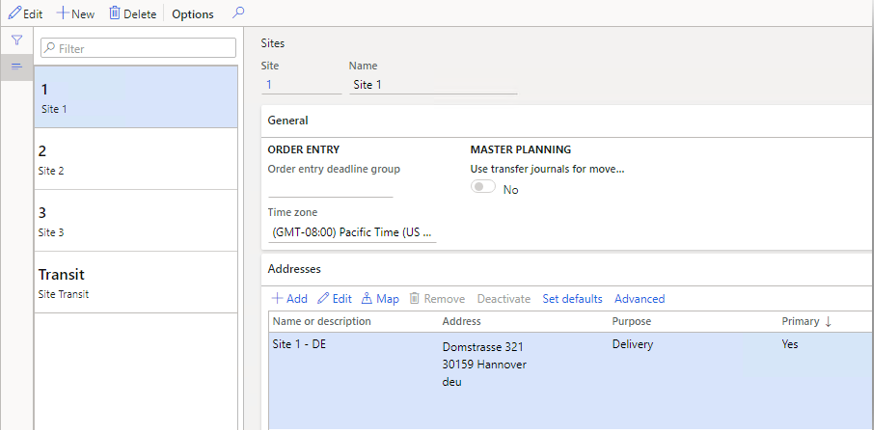
Create ship-from, transit, and ship-to warehouses. Any address information that is maintained in a warehouse will override the site address during tax calculation.
- Go to Warehouse management > Setup > Warehouse > Warehouses.
- Select New to create a warehouse, and assign it to the corresponding site.
- Repeat step 2 to create a warehouse for each site as required.
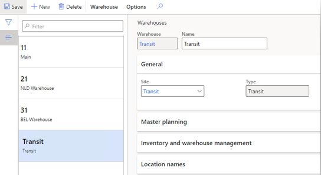
Note
For a ship-from warehouse, a transit warehouse must be selected in the Transit warehouse field for transfer order transactions.
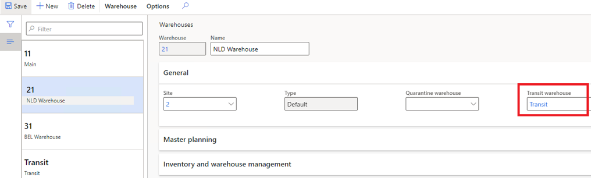
Verify that the inventory posting configuration is set up for transfer order transactions.
Go to Inventory management > Setup > Posting > Posting.
On the Inventory tab, verify that a ledger account is set up for both Inventory issue and Inventory receipt posting.
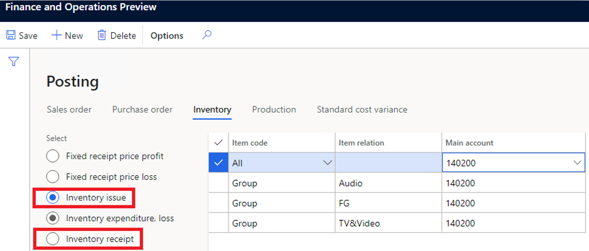
Verify that a ledger account is set up for Inter-unit payable posting.
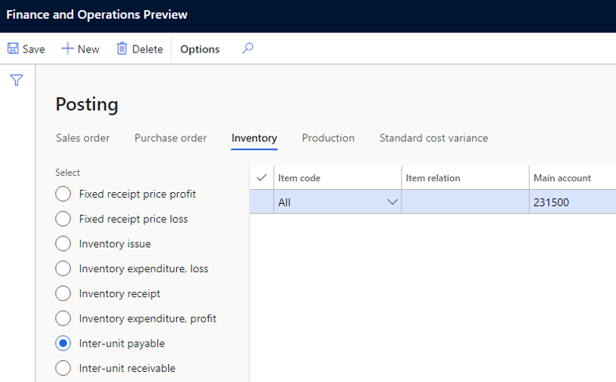
Verify that a ledger account is set up for Inter-unit receivable posting.
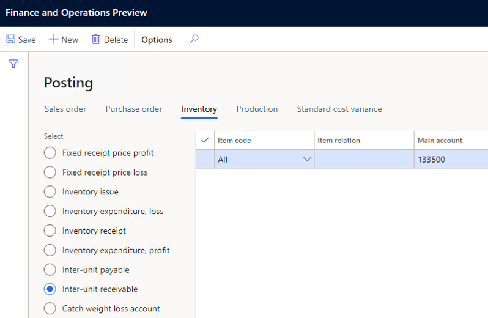